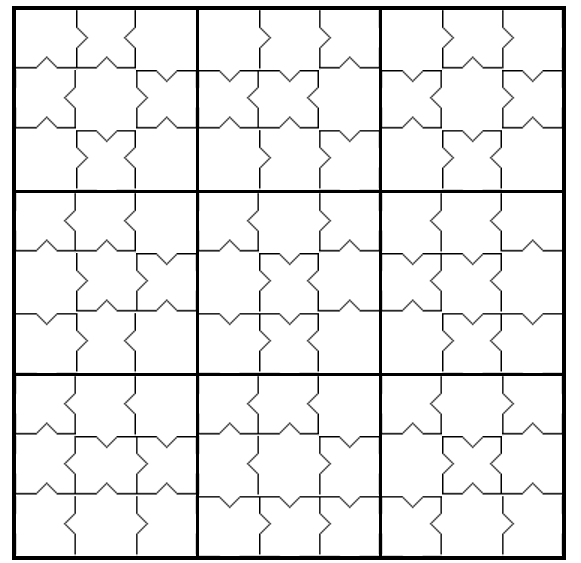
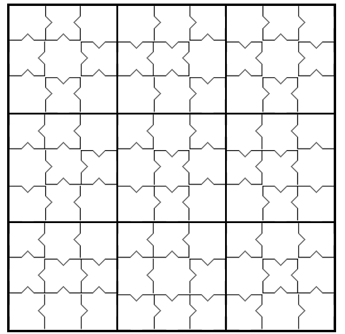

Solving sudokus with extended constraints
Sudoku's can be solved efficiently by converting them to a SAT problem and solving them using one of the existing SAT solvers. Next to regular Sudoku's, it is interesting to look into Sudoku's where more constraints need to be satisfied. One example of such a Sudoku would be the coloured Sudoku, where the cells of the same colour also need to have unique numbers. Another variation on Sudoku's which adds constraints to the regular Sudoku is the greater-than Sudoku. Now, no numbers are pre-filled but greater-than and smaller-than signs indicate the values a cell can have. In this project, we investigated whether the adding of constraints makes Sudoku's easier to solve.
 

The Solver, Encoding and Performance
In this project zChaff was used as a solver. This gave efficient results with extensive statistics. Details on the encoding and metrics can be found in our report: download.
A Killer Sudoku Database
The Sudoku's generated for this project can be found on our page.
Authors
The project was developed by Mark Romme and Simone van Bruggen.